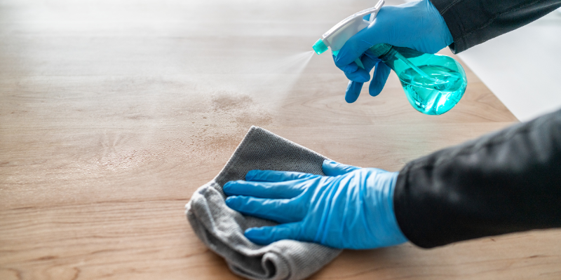

A Importância da Higienização Profunda em Ambientes Corporativos
Nos dias atuais, a higienização profunda de ambientes corporativos se tornou uma prioridade essencial para empresas de todos os tamanhos. Manter um espaço de trabalho limpo e seguro não apenas melhora a imagem da empresa, mas também protege a saúde dos colaboradores, aumenta a produtividade e promove o bem-estar geral. Com o avanço das práticas de limpeza e novas preocupações de saúde pública, o conceito de limpeza foi elevado para um novo patamar: a higienização profunda.

Neste artigo, vamos explorar a importância de uma higienização completa em ambientes corporativos e como ela impacta positivamente nas operações e no clima organizacional.
1. Proteção da Saúde dos Colaboradores
A presença de germes, vírus e bactérias em superfícies e ambientes compartilhados pode rapidamente se espalhar, causando doenças entre os funcionários. Isso resulta em aumento de afastamentos, perda de produtividade e até riscos maiores de surtos em locais de trabalho com grande circulação de pessoas.
Com a higienização profunda, é possível eliminar germes em áreas de alto contato, como teclados, mesas, maçanetas e banheiros. Isso reduz drasticamente a incidência de doenças, como gripes e viroses, criando um ambiente de trabalho mais saudável e seguro.
Vantagem: Um ambiente limpo previne doenças, protegendo sua equipe e reduzindo os dias de ausência. Agende uma avaliação de limpeza completa!
2. Qualidade do Ar e Conforto no Ambiente
Ambientes corporativos costumam ter sistemas de ventilação que, sem a devida manutenção, acumulam poeira e outras partículas nocivas, como mofo. A má qualidade do ar pode causar alergias e até problemas respiratórios, afetando a saúde e o desempenho dos colaboradores.
A higienização profunda inclui a limpeza de dutos de ar e filtros de ventilação, garantindo que o ar que circula no ambiente seja limpo e saudável. Isso resulta em um ambiente mais confortável, sem odores desagradáveis ou alérgenos, o que aumenta o bem-estar de todos.
- Melhora na qualidade do ar e conforto no espaço, promovendo saúde e bem-estar.
Benefícios:
3. Melhora na Imagem da Empresa
Ambientes corporativos limpos e organizados são reflexos diretos do compromisso de uma empresa com o profissionalismo. Um espaço sujo ou desorganizado pode prejudicar a imagem da empresa, especialmente quando clientes ou parceiros visitam o local.
Com a higienização profunda, sua empresa mantém uma aparência impecável, transmitindo confiança e profissionalismo. Isso melhora a experiência de clientes e visitantes, reforçando a reputação da sua marca no mercado.
- Uma boa impressão que aumenta a credibilidade e reforça a confiança do cliente.
Vantagem:
4. Maior Produtividade e Eficiência
Ambientes limpos e organizados favorecem a concentração e o desempenho dos colaboradores. A sujeira, a desorganização e até o desconforto causado por cheiros desagradáveis podem ser fatores de distração e estresse.
A limpeza profunda elimina essas distrações, permitindo que os funcionários se concentrem no que realmente importa: suas tarefas. Um ambiente agradável e livre de sujeira contribui diretamente para o aumento da produtividade e melhora o clima organizacional.
- Espaços limpos e organizados criam um ambiente propício para a alta performance.
- Cumprimento das normas de saúde e segurança, evitando riscos legais e financeiros.
Benefícios:
5. Conformidade com Normas de Segurança e Saúde
Empresas precisam estar em conformidade com as normas regulamentadoras de saúde e segurança do trabalho. A falta de higienização adequada pode resultar em multas e sanções por não atender às exigências desses regulamentos. A higienização profunda garante que sua empresa esteja em dia com essas regulamentações, evitando penalidades e demonstrando responsabilidade com a saúde e segurança dos colaboradores. Além de evitar riscos legais, essa prática eleva o padrão de segurança da sua empresa.
Benefícios:
Conclusão
Investir em higienização profunda não é apenas uma questão de limpeza, mas uma estratégia inteligente para melhorar a saúde, o bem-estar e a produtividade dos colaboradores. Além disso, reforça a imagem da empresa e assegura o cumprimento das normas de segurança e saúde no trabalho.
Empresas que mantêm seus ambientes limpos e higienizados demonstram compromisso com a qualidade de vida e a eficiência de suas operações. Não perca tempo, implemente já uma rotina de higienização profunda em sua empresa!
Entre em contato com nossa equipe especializada!
Gostou deste conteúdo? Compartilhe e siga nossas atualizações sobre sustentabilidade!
Categorias: Limpeza e Organização, Dicas Domésticas Tags: #limpeza, #organização


Deixe um comentário